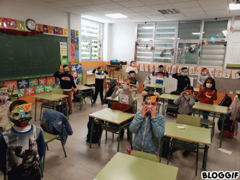
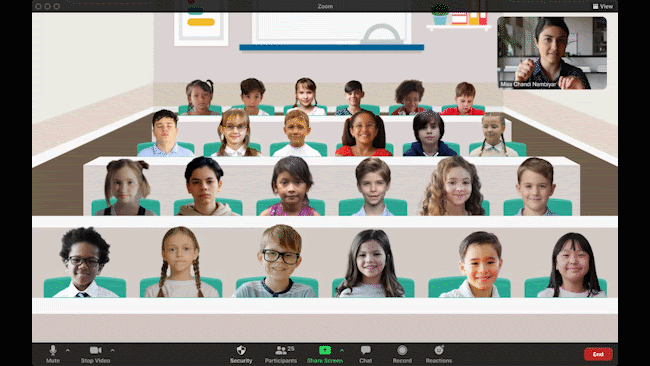
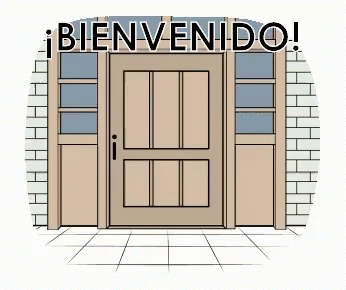

A continuacion se presenta un video introductorio para comprender
de una forma mas clara el funcionamiento del internet de las cosas:
Aplicaciones:
Clases a distancia (Nueva modalidad)
 
Mediante el uso de los sistemas de videoconferencias disponibles
en computadoras o equipos móviles con facilidad de cámaras de video,
es posible impartir la enseñanza a puntos distantes.
Bibliotecas Digitales

Son centros de almacenamiento de datos electrónicos organizados de manera
tal que sea fácil su búsqueda y generar reservas para su lectura en línea,
algunas ofrecen facilidades para descargas de documentos.
Puertas Manuales VS Puertas inteligentes


Internet de las Cosas hace posible a los centros educativos,
implementar un control y una monitorización de los recursos disponibles,
Por ejemplo, las puertas ahora son electricas, como se muestra en la seccion anterior.
Y para finalizar:
Presentamos este video para esclarecer un poco mas la informacion